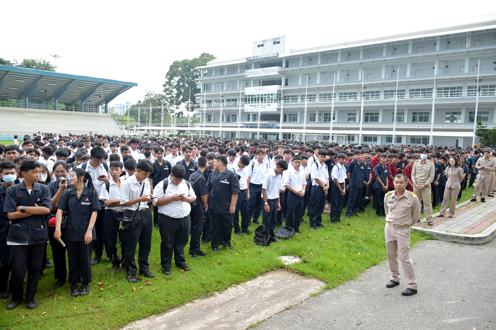
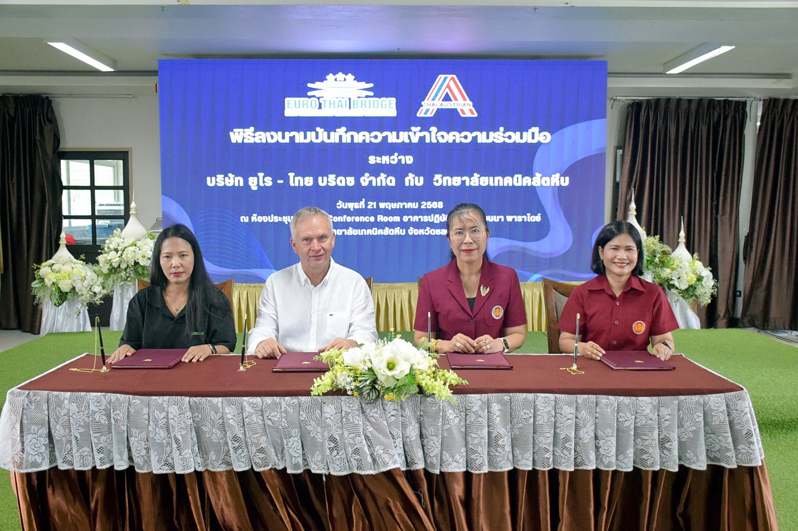

.jpg)
ดร.อรทัย โยธินรุ่งเรือง สุดสงวน ผู้อำนวยการวิทยาลัยเทคนิคสัตหีบ พร้อมด้วยผู้บริหารและคณะครู ได้ให้การต้อนรับนักเรียนอย่างอบอุ่นโดยมีการกล่าวต้อนรับและให้โอวาทแก่นักเรียน เพื่อสร้างขวัญและกำลังใจในการเริ่มต้นปีการศึกษาใหม่ ทั้งนี้ท่านผู้อำนวยการฯ ได้เน้นย้ำนักเรียน นักศึกษา ถึงความสำคัญของการปฏิบัติตามกฎระเบียบวินัย โดยเฉพาะในเรื่องของการลงทะเบียนพาหนะขับขี่ของนักเรียน นักศึกษา เพื่อความปลอดภัยและความเป็นระเบียบเรียบร้อยอย่างเป็นระบบ โดยเฉพาะรถจักรยานยนต์ซึ่งเป็นพาหนะหลักของนักเรียน นักศึกษาที่นำพาหนะมาใช้ภายในวิทยาลัยจะต้องปฏิบัติตามขั้นตอนที่ทางวิทยาลัยฯกำหนดอย่างเคร่งครัด
✨ บรรยากาศภายในช่วงเช้า เป็นไปอย่างเรียบร้อย นักเรียนส่วนใหญ่แต่งกายถูกระเบียบและให้ความร่วมมือกับกิจกรรมหน้าเสาธงในวันแรกเป็นอย่างดี การเปิดเทอมวันแรกในครั้งนี้สะท้อนให้เห็นถึงความพร้อมของทั้งนักเรียนและบุคลากรของวิทยาลัยในการเริ่มต้นปีการศึกษาใหม่อย่างมีคุณภาพ และมีความร่วมมือกันในการสร้างสภาพแวดล้อมที่เหมาะสมต่อการเรียนรู้ 🕗 เมื่อวันจันทร์ที่ 19 พฤษภาคม พ.ศ. 2568 ณ สนามฟุตบอล วิทยาลัยเทคนิคสัตหีบ
👑 ดร.อรทัย โยธินรุ่งเรือง สุดสงวน ผู้อำนวยการวิทยาลัยเทคนิคสัตหีบ ลงนามบันทึกความเข้าใจร่วมกับ บริษัท ยูโร-ไทย บริดซ จำกัด เพื่อส่งเสริมความร่วมมือทางด้านการศึกษาและการพัฒนาทักษะวิชาชีพให้กับนักเรียน นักศึกษาแผนกวิชาไฟฟ้า และสาขาวิชาที่เกี่ยวข้อง โดยมีเป้าหมายเพื่อผลิตกำลังคนด้านเทคโนโลยีขั้นสูงที่สอดคล้องกับความต้องการของตลาดแรงงานทั้งในและต่างประเทศ
✨ความร่วมมือครั้งนี้จัดขึ้นภายใต้โครงการ “สถานประกอบการร่วมจัดการศึกษา” โดยบริษัท ยูโร-ไทย บริดซ จำกัด ซึ่งมีสำนักงานตั้งอยู่ที่ตำบลบางเสร่ อำเภอสัตหีบ จังหวัดชลบุรี และบริหารงานโดย Mr. Miloslav Zeman กรรมการผู้จัดการบริษัท ได้ร่วมลงนามร่วมกับวิทยาลัยเทคนิคสัตหีบ
✨การลงนามบันทึกข้อตกลงครั้งนี้ถือเป็นก้าวสำคัญในการยกระดับคุณภาพการจัดการอาชีวศึกษา และสร้างโอกาสให้นักศึกษาได้เรียนรู้กับสถานประกอบการจริง เสริมสร้างทักษะอาชีพและเพิ่มศักยภาพให้พร้อมเข้าสู่ตลาดแรงงานในยุคอุตสาหกรรม 4.0 🕗 เมื่อวันพุธที่ 21 พฤษภาคม พ.ศ. 2568 ณ ห้องประชุม Vienna Conference Room อาคารปฏิบัติการฯ เวียนนาพาราไดซ์
